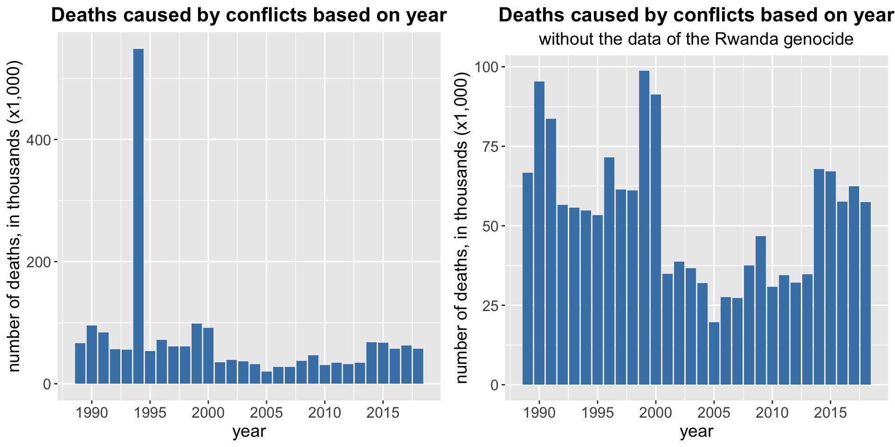
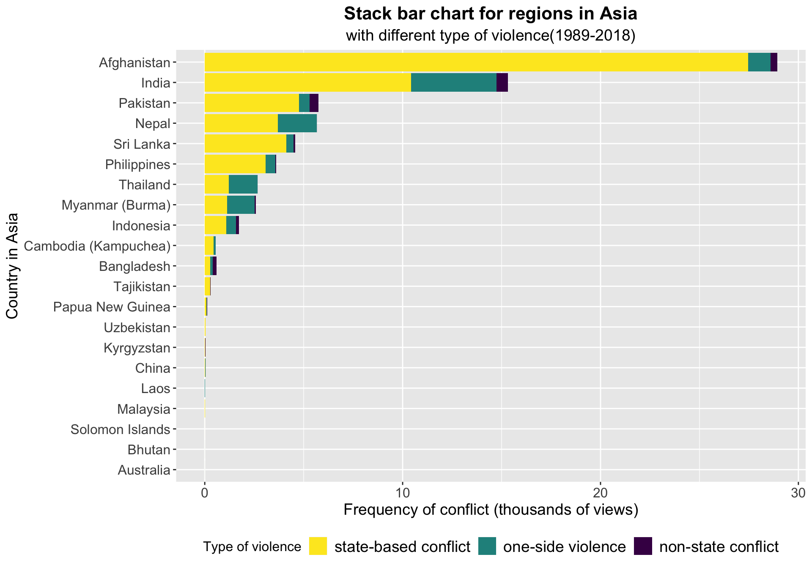

Chapter 5 Results
5.1 Distribution of the number of deaths based on conflicts

As shown in the top-left plot, the dataset is highly skewed and imbalanced. When we focus on the data with death less than 100 people, we can see the data are more concentrated in <20 regions. Most conflicts have less than five deaths.

The above Cleveland plot shows top conflicts which caused most deaths (\(\geq\) 5,000), there is a conflict happened in Rwanda caused approximately 300,000 deaths, which is much more than other conflicts. Also, most of the conflicts causing significant fatalities were taken place in Rwanda.
| id | side_a | side_b | year | best | |
|---|---|---|---|---|---|
| 13767 | 45108 | Government of Rwanda | Civilians | 1994 | 300557 |
| 47072 | 34362 | Government of Eritrea | Government of Ethiopia | 2000 | 48183 |
| 35731 | 40030 | Government of Rwanda | Civilians | 1994 | 40000 |
| 21448 | 34346 | Government of Eritrea | Government of Ethiopia | 1999 | 30000 |
| 35679 | 39595 | Government of Rwanda | Civilians | 1994 | 27500 |
| 14095 | 142243 | Government of Rwanda | Civilians | 1994 | 20000 |
| 35647 | 39465 | Government of Rwanda | Civilians | 1994 | 16890 |
| 20705 | 34345 | Government of Eritrea | Government of Ethiopia | 1999 | 15000 |
| 1943 | 33614 | Government of Rwanda | Civilians | 1994 | 12000 |
| 35674 | 143468 | Government of Rwanda | Civilians | 1994 | 11170 |
After an investigation of those conflicts, we found out most of them are between the Government of Rewanda and civilians, which was related to the Rwanda genocide in 1994.
5.2 Relation between conflict and time

As shown in the bar chart, the number of conflicts that occur in each year tends to increase from 1998 to 2018. The number of conflicts is lowest in 1997.

The conflict-caused deaths are extremely high in 1994, as shown in the left plot. As mentioned in the previous point, a high number of deaths were probably related to the Rwanda genocide. When we filter out the data related to the Rwanda genocide, we get the plot on the right. The conflict-caused death per year decreased from 1989 until 2005, after 2005, the number tends to increase.

Most conflicts are state-based conflict, i.e., the conflict involved with “[a] government of a state or any opposition organization or alliance of organizations” [source, pp.28-29], which is higher in number comparing to the other two types of conflict. Before 2018, there are more one-side conflicts (against civilians) than non-state conflicts (between two armed groups). But in 2018, there are more non-state conflicts compare to one-side conflict.
If you are interested in the detailed and formal definition of these three types of conflict, please refer to this source, pp. 28-31.
We want to check further how many civilians deaths each year, compare to the deaths of non-civilians caused by conflicts.


| id | side_a | side_b | year | deaths_civilians | country | |
|---|---|---|---|---|---|---|
| 1121 | 24675 | AFDL | Civilians | 1996 | 3200 | DR Congo (Zaire) |
| 971 | 24212 | AFDL | Civilians | 1996 | 1589 | DR Congo (Zaire) |
| 26 | 24564 | AFDL | Civilians | 1996 | 1500 | DR Congo (Zaire) |
| 2750 | 20214 | AFDL | Civilians | 1996 | 1500 | DR Congo (Zaire) |
| 24 | 24575 | AFDL | Civilians | 1996 | 1256 | DR Congo (Zaire) |
| 988 | 24366 | AFDL | Civilians | 1996 | 1000 | DR Congo (Zaire) |
| 1095 | 45053 | ULIMO - J | Civilians | 1996 | 1000 | Liberia |
| 893 | 24626 | AFDL | Civilians | 1996 | 887 | DR Congo (Zaire) |
| 881 | 23936 | AFDL | Civilians | 1996 | 851 | DR Congo (Zaire) |
| 908 | 24489 | AFDL | Civilians | 1996 | 830 | DR Congo (Zaire) |
From the above plots, the top-left one, we can see that there are large civilians death in conflicts happened in 1994, which potentially because of the Rwanda genocide; after removing the records regarding the Rwanda genocide, the civilian deaths in 1994 was similar with other years.
The bottom two plots show the proportion of civilian deaths caused by conflicts, by comparing the left and right plots, we can see that the Rwanda genocide is the reason of leading extreme high proportion of civilian deaths. In most of the years, the percentage of civilian deaths is around 25%, except in the year 1994 and the year 1996. After further checking, the reason for the high proportion of civilian deaths in 1996 is probably due to the First Congo War.
5.3 Patterns between geographical location and type of violence
Fristly, we want to briefly see the pattern between region and type of violence. To explore the pattern between region and type of violence, which are both categoical variables, the best way is to create a mosaic plot to see if there exists any patterns betweem them. We create a mosaic plot to show the patterns of types of violence under each different region, which means that, in the plot, region is splited first and then type of violence is splited.

From the mosaic plot above, the percentages of one-side violence and non-state conflict are both lower than percentage of state-based conflict. State-based conflict are the most frequent type of violence among all regions, as state-based conflict is the most conventional and common among all types of violence, which is conflict between two legitimate players, namely state actors or the governments of the states. State-based conflict is a very common type of violence around the world.
Moreover, compared with Asia, Europe and Middle East, Africa and American have more percentage of non-state conflict. For Africa, there are a lot of private military companies and especially, terrorist organizations, such as, Boko Haram in Nigeria and al Shabab in Somalia. These military companies and terrorist organizations are senseless and they used extremely brutal method, such as suicide bombing, to hurt innocent civilians in Africa. For Americas, the reason why the percentage of non-state conflict is so high is that, in South America and Mexico, there are so many drug cartels which is the criminal organization with intention of supplying drug trafficking operations. There are always conflicts between different drug cartels.
In addition, in the graph, the total area of Africa and total area of Asia are much larger than those of Americas, Europe and Middle East, which shows that the total numbers of conflicts in Africa and Asia are greater. For Africa, as we discussed before, the terrorist organizations and private military companies are the fundational cause of such large number of conflict. However, in Asia, the reason why the number of conflict is so high remains unclear. We need to create a separate bar chart for country in Asia to see what happened.

As we can see from the graph above, in Asia, Afghanistan has a extrmemely large number of conflicts happened, and most of these conflicts are state-based conflict. War in Afghanistan is well-known around the world. US government engaged into War in Afghanistan to wipe out Taliban government because the Taliban government refused to hand over terrorist leader Osama bin Laden in the wake of al-Qaeda’s September 11, 2001. In Afghanistan, most conflicts are state-based conflicts, which are conflicts between US and Taliban government. The war had last for eighteen years and obviously, numerous of conflicts happened during 18 years. Now we know that war in Afghanistan from 2001 till now causes relatively high total number of conflicts in Asia.
After anaysis of relation between region and type of violence, we want to explore more deeply to countries in different representative countries , just as we analysis the Afghanistan above. We decide to use the best way to explore spatial patterns which is to create a Choropleth plot to see distribution of different type of violence for each country among the world.
 From the Choropleth map above, we can re-verify our finding before, it is easy to see that the number of yellow color dots which represent the state-based conflict, much more than the number of other two color dots. In other words, the conventional state-based conflict is widely happened around the wolrd compared to other two types of violence.
From the Choropleth map above, we can re-verify our finding before, it is easy to see that the number of yellow color dots which represent the state-based conflict, much more than the number of other two color dots. In other words, the conventional state-based conflict is widely happened around the wolrd compared to other two types of violence.
Besides what we find before, we can still see a lot of patterns between countries and type of violence. Because of numerous patterns and large number of conflicts, we will only choose some of them to discuss.
Especially, there are a lot of state-based conflicts in Philippines, as we can see from the graph. This is known as Communist rebellion in the Philippines. It is an ongoing conflict between the Government of the Philippines and the communist coalition of the Communist Party of the Philippines (CPP) from 1969 to present. The long-lasting conflict betweem them can be divided into numerous small conflicts which are shown in the map. We can use statistical method to see if our finding is true.
 From the bar chart above, we can confirm that our finding is true that most of state-based conflicts on the map is the Comummist Rebellion started by CPP in the Philippines.
From the bar chart above, we can confirm that our finding is true that most of state-based conflicts on the map is the Comummist Rebellion started by CPP in the Philippines.
Meanwhile, most of conflict Mexico are non-state conflict. Our former finding is that the cause of such a great number of non-state conflicts is about the drug cartel. Therefore, we filter the data and see if it is caused by drug cartels.
## [1] "List of name of side A:"## [[1]]
## side_a
## 1 Juarez Cartel
## 2 Jalisco Cartel New Generation
## 4 Gulf Cartel
## 5 Los Ardillos
## 6 Los Zetas - Jorge Ivan Hernandez Cantu faction
## 7 Los Zetas - Cártel del Noreste faction
## 10 Los Zetas
## 15 Sinaloa Cartel
## 20 Los Aztecas
## 31 Mara 18 (Guatemala)
## 42 Tijuana Cartel
## 84 Garcia clan
## 88 Hells Angels
## 94 Santiago Xochiltepec
## 362 Beltrán Leyva Cartel
## 948 Gulf Cartel - Ramirez Treviño faction
## 949 Cartel Independiente de Acapulco
## 958 La Familia
## 1334 Guerreros Unidos
## 1438 La Mochomera
## 1443 Autodefensas Unidas de Michoacán
## 1561 Gulf Cartel - Dragones de Sheyla faction
## 1586 Sinaloa Cartel - Los Chavez Matamoros faction
## 1735 Sinaloa Cartel - El Pepillo faction
## 1782 Sinaloa Cartel - Los Memos faction
## 2632 La Union de Tepito## [1] "List of name of side B:"## [[1]]
## side_b
## 1 Sinaloa Cartel
## 2 Los Caballeros Templarios
## 4 Los Zetas
## 5 Los Rojos
## 6 Los Zetas - Juan Pedro Salvador Saldivar Farias faction
## 7 Los Zetas - Old School Zetas faction
## 10 Los Zetas - Velazquez Caballero faction
## 12 La Nueva Familia
## 15 Forces of Damaso
## 19 Nueva Plaza Cartel
## 20 La Linea
## 25 Santa Rosa de Lima Cartel
## 31 Mara Salvatrucha (Guatemala)
## 32 Tijuana Cartel
## 42 Tijuana Cartel - El Teo faction
## 84 Pena Rojas clan
## 88 Rock Machine
## 94 Santo Domingo Teojomulco
## 677 Beltrán Leyva Cartel - Valdez Villareal faction
## 948 Gulf Cartel - Villareal faction
## 949 La Barredora
## 978 La Resistencia
## 1411 La Familia
## 1561 Gulf Cartel - Los Fresitas faction
## 1586 Sinaloa Cartel - Los Salgueiro faction
## 1628 Cartel Independiente de Acapulco
## 1735 Sinaloa Cartel - Los 28 faction
## 1782 Sinaloa Cartel - Los Salazar faction
## 2632 Fuerza Anti UniónFrom the lists of two sides in non-state conflicts in Mexico, we can see that the non-state conflicts are mostly caused by fights between drug cartels.
In addition, for Peru in south america, there are a lot of yellow dots which represent state-based conflicts. It represents the internal war in Peru between the Government of Peru and the Communist Party of Peru-Shining Path/Túpac Amaru Revolutionary Movement (MRTA). The internal war of Peru last for 20 years. Then, we also filter the orginal dataset to see if our finding is true.  From the graph above, we can see that side B with highest frequency is Sendero Luminoso, which is the spanish of Shining Path. Judging from this, we can confirm that the high number of state-based conflicts in Peru is caused by internel war in Peru between Government of Peru and Communist Part of Peru-Shining Path.
Overall, all around the world, most of regions have a dominating number of state-based conflict, except for some representative regions, such as Mexican and Central Africa. Theses exceptions are caused by special backgrounds, such as prevalence of drug cartels or rise of terrorist orgainzations.